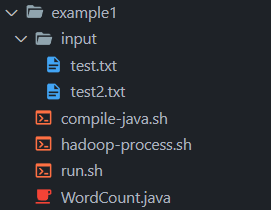
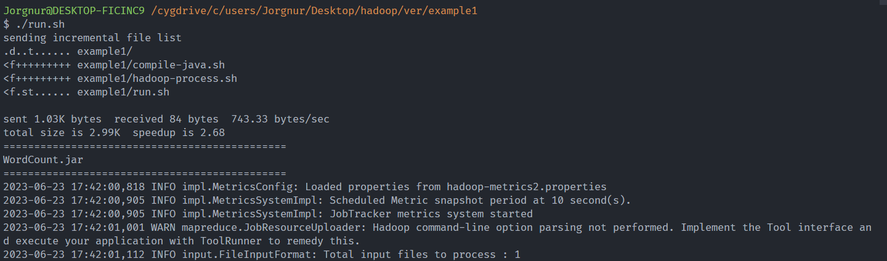
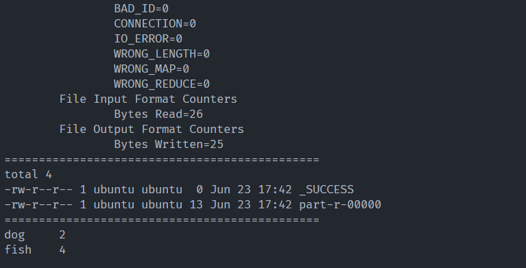

1 The Word Count Example
Count all words in files
1.1 Prerequisites
Assume that you have already installed these softwares:
- Java (on the Server)
- Hadoop (on the Server installed in Standalone Operation)
- Cgywin (Optional for the Clients)
The overall files in this example are shown here. 
1.2 Word Count in Java code
WordCount.java
import java.io.IOException;
import org.apache.hadoop.conf.Configuration;
import org.apache.hadoop.fs.Path;
import org.apache.hadoop.io.*;
import org.apache.hadoop.mapreduce.*;
import org.apache.hadoop.mapreduce.lib.input.FileInputFormat;
import org.apache.hadoop.mapreduce.lib.output.FileOutputFormat;
public class WordCount {
public static class Map extends Mapper<LongWritable, Text, Text, IntWritable> {
private final static IntWritable one = new IntWritable(1);
private Text word = new Text();
public void map(LongWritable key, Text value, Context context) throws IOException, InterruptedException {
String line = value.toString();
String[] words = line.split(" ");
for (String word : words) {
this.word.set(word);
context.write(this.word, one);
}
}
}
public static class Reduce extends Reducer<Text, IntWritable, Text, IntWritable> {
public void reduce(Text key, Iterable<IntWritable> values, Context context) throws IOException, InterruptedException {
int sum = 0;
for (IntWritable value : values) {
sum += value.get();
}
context.write(key, new IntWritable(sum));
}
}
public static void main(String[] args) throws Exception {
Configuration conf = new Configuration();
Job job = Job.getInstance(conf, "wordcount");
job.setJarByClass(WordCount.class);
job.setMapperClass(Map.class);
job.setReducerClass(Reduce.class);
job.setOutputKeyClass(Text.class);
job.setOutputValueClass(IntWritable.class);
FileInputFormat.addInputPath(job, new Path(args[0]));
FileOutputFormat.setOutputPath(job, new Path(args[1]));
System.exit(job.waitForCompletion(true) ? 0 : 1);
}
}1.3 Compile java into jar
compile-java.sh
#!/bin/bash
echo "=============================================="
HADOOP_HOME="/home/ubuntu/hadoop-3.3.5"
# Compile the Java program using the javac command:
javac -cp "$HADOOP_HOME/share/hadoop/common/hadoop-common-3.3.5.jar:\
$HADOOP_HOME/share/hadoop/mapreduce/hadoop-mapreduce-client-core-3.3.5.jar" \
WordCount.java
# Create a JAR file using the jar command:
jar cf WordCount.jar WordCount*.class
ls *.jar1.4 Process a jar file in Hadoop
hadoop-process.sh
#!/bin/bash
echo "=============================================="
HADOOP_HOME="/home/ubuntu/hadoop-3.3.5"
if [ -d "output" ]; then
rm -r output
fi
$HADOOP_HOME/bin/hadoop jar WordCount.jar WordCount input output
echo "=============================================="
ls -l output
echo "=============================================="
cat output/*1.5 Create input files
Create input folder that consists of
test.txt
fish dog fishand
test2.txt
fish dog fish1.6 Run all scripts
Run all scripts
run.sh
#!/bin/bash
remote_ip="192.168.1.109"
file_dir="example1"
file_path="/cygdrive/c/users/Jorgnur/Desktop/hadoop/ver/$file_dir"
dest_path="~/"
rsync -avzphi "$file_path" "ubuntu@$remote_ip:$dest_path"
ssh ubuntu@$remote_ip " \
cd $dest_path$file_dir && \
./compile-java.sh && \
./hadoop-process.sh
"We can run the script by typing ./run.sh

Then, we can obtain 2 words of dogs and 4 words of fish.
